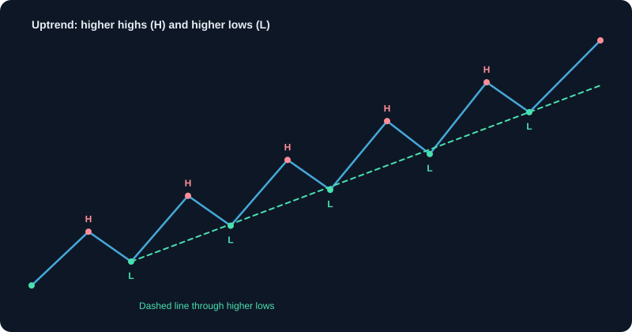
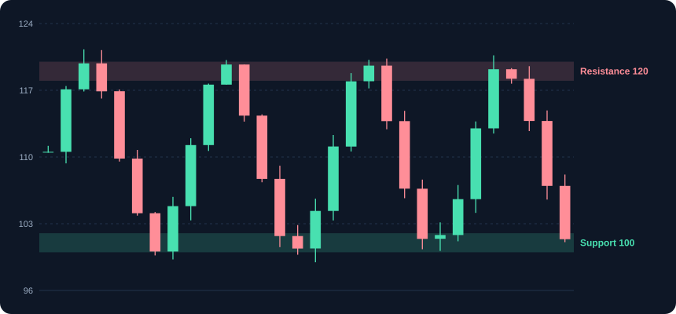
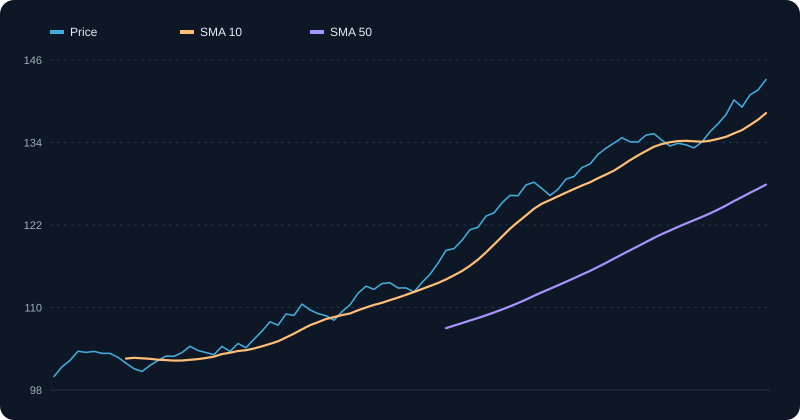
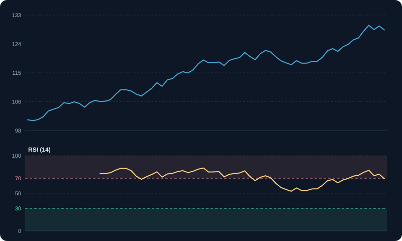
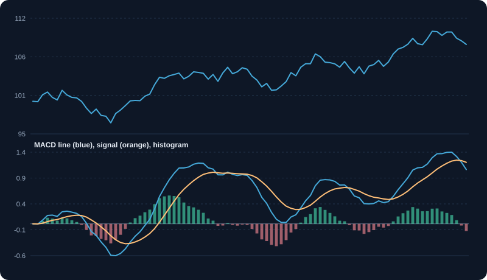

Technical Analysis
Study price and volume patterns, trends, support, resistance and common indicators.
1. What technical analysis studies
Technical analysis studies price and volume to understand the behaviour of buyers and sellers. It assumes that price already reflects known information, and that patterns of behaviour tend to repeat because people react in similar ways to similar situations. It is a method for managing probabilities and timing, not a guarantee of future prices.
2. Trend: the first thing to identify
A trend is the general direction of price. Uptrend: higher highs and higher lows. Downtrend: lower highs and lower lows. Sideways: no clear direction. Most beginners lose money by trading against the trend. Identify the trend on a higher timeframe first, and then look for entries in that direction.
- Trend lines connect swing lows in an uptrend and swing highs in a downtrend.
- A trend is weakening when a new high fails to form, or when price breaks its last swing low.
- Moving averages can confirm trend direction: price above a rising average suggests an uptrend.
3. Support and resistance
Support is a price area where buying has tended to appear. Resistance is an area where selling has tended to appear. They are zones, not exact prices. A level becomes stronger each time price respects it, and when price breaks through with volume, the broken resistance often becomes new support.
4. Moving averages
A moving average is the average price over a set number of periods. It smooths noise and shows direction. The most used are 20, 50 and 200 periods. A simple moving average (SMA) weights all periods equally; an exponential moving average (EMA) gives more weight to recent prices and reacts faster.
Example: the 5-period SMA of closes 100, 102, 104, 103 and 105 is 102.8. On the next day, with a close of 107, the average becomes 104.2, because 100 drops out and 107 comes in.
5. Momentum: RSI and MACD
Momentum indicators measure how fast price is moving and whether that speed is changing.
- RSI (relative strength index): a 0 to 100 scale over 14 periods. Above 70 is often overbought, below 30 oversold. In strong trends it can stay in those zones for a long time.
- MACD: the difference between a 12-period and a 26-period EMA, with a 9-period signal line. A MACD line crossing above its signal line is a bullish momentum signal.
- Divergence: price makes a new high while RSI or MACD makes a lower high. It warns that momentum is fading.
6. Volume: the strength behind the move
Volume confirms price moves. A breakout on high volume is more reliable than one on low volume. A rally on falling volume is weak. High volume at the end of a long fall can mark exhaustion, but confirm with the next candles before acting.
7. Chart patterns and breakouts
Chart patterns such as triangles, flags and head and shoulders describe a range that price is building. The breakout from the range is the trade signal. Measure the potential move from the pattern's height only as a rough guide, and place a stop just inside the range, so a failed breakout exits quickly.
8. Risk first: stops and position size
Technical signals are only as good as the risk attached to them. Decide the stop-loss before the entry, based on structure (below the last swing low) or volatility (for example 2 times ATR). Then size the position so that the loss at the stop equals your planned risk, such as 1% of capital.
Example: capital ₹1,00,000, risk 1% = ₹1,000. Entry ₹250, stop ₹240 (₹10 risk per share). Position = 1,000 ÷ 10 = 100 shares. If the stop is hit, the loss is about ₹1,000, before costs.
9. Combining tools without overloading the chart
Pick one tool from each group: a trend tool (moving averages), a momentum tool (RSI or MACD), and volume. Add structure (support, resistance, trend lines). That is enough for most decisions. Adding many indicators that all measure momentum repeats the same information. Use the chart as a checklist: trend agrees, momentum agrees, volume agrees, and the level is clear.
10. Common mistakes and how to avoid them
- Using hindsight to draw levels after the move.
- Changing indicator settings until the chart looks right.
- Trading without a stop because the setup looks strong.
- Averaging down into a losing trade against the trend.
- Testing on too few trades to know whether the method works. Track at least 30 to 50 trades.
Charts and visuals





Worked examples
Five-period simple moving average
Closes: 100, 102, 104, 103, 105. Average = 514 ÷ 5 = 102.8. Next day closes at 107 and the oldest value (100) drops out. New average = (102 + 104 + 103 + 105 + 107) ÷ 5 = 521 ÷ 5 = 104.2.
RSI calculation
Over 14 periods, average gain is 1.5 and average loss is 0.5. RS = 1.5 ÷ 0.5 = 3. RSI = 100 − 100 ÷ (1 + 3) = 75, which is above the common 70 overbought reference.
Real-life scenarios
Breakout on low volume
Price moves above resistance, but volume is below average. Many such breakouts fail and return into the range. Waiting for a retest or higher volume reduces false signals.
RSI overbought in a strong uptrend
RSI reads 78 while the price keeps making higher highs. Strong trends can stay overbought for weeks. Selling only because RSI is above 70 often means missing the trend.
Golden cross after a long decline
The 50-day average crosses above the 200-day average after months of falling prices. This is widely watched, but it lags. Confirm with price structure and volume.
Use cases
- Screening for stocks trading above their 200-day average.
- Placing a stop loss just below a recent support level.
- Timing an entry on a pullback to a moving average within an uptrend.
Key takeaways
- Indicators are derived from price and volume; they describe, they do not predict with certainty.
- Moving averages smooth noise and show trend direction.
- RSI above 70 or below 30 signals extremes, but strong trends can persist.
- Confirm signals with volume and price structure.
Key terms, explained
- Trend
- The general direction of price: up (higher highs and lows), down (lower highs and lows), or sideways.
- Support
- A price level where buying has tended to appear and stop further falls.
- Resistance
- A price level where selling has tended to appear and stop further rises.
- Moving average
- The average price over a set number of periods, used to smooth price and show trend.
- RSI
- Relative Strength Index: a 0 to 100 momentum measure. Above 70 is often overbought; below 30 oversold.
- MACD
- Moving Average Convergence Divergence: a momentum indicator built from two moving averages and a signal line.
- Divergence
- When price and an indicator move in opposite directions, such as a new price high with a lower indicator high. It can warn that momentum is fading.
- Breakout
- Price moving clearly above resistance or below support, often on higher volume.
- Candlestick
- A chart element showing open, high, low and close for a period, coloured by direction.
Questions learners ask
Is technical analysis a science?
It is a method for reading price and volume behaviour. It works best as a way to manage probabilities and timing, not as a guarantee of what happens next.
Which indicators should a beginner start with?
Start with one trend tool (a moving average), one momentum tool (RSI), and volume. Learn how each behaves before adding more.
Do I need to use every indicator?
No. Many indicators measure the same thing. Two or three that cover different aspects are more useful than ten that agree with each other.
Educational content only, not investment advice. Markets carry risk, including loss of capital. Examples are simplified and may exclude charges, taxes and slippage.